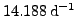
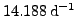

Since COMBINE processes the input file row by row, the order of rows plays a crucial part in the way the analysis is performed. Changing the order of rows in the input file influences the base upon which the linear combinations are formed. Thus, if there are frequencies previously known to be genuine, it is advisable to ensure that they are on top of the input file, if all further frequencies are supposed to be checked for linear combinations of preferrably these components.
Example. The input of the sample project order is essentially the same as for CombineNative. Only the order of rows is slightly modified: the 6th signal component of the file result.dat in the project CombineNative, which refers to the orbit frequency of the MOST spacecraft, appears now on top. This re-ordering forces COMBINE to consider
 genuine. Also the configuration file result.dat.ini is the same as for the project CombineNative.
The input of the sample project order is essentially the same as for CombineNative. Only the order of rows is slightly modified: the 6th signal component of the file result.dat in the project CombineNative, which refers to the orbit frequency of the MOST spacecraft, appears now on top. This re-ordering forces COMBINE to consider
 genuine. Also the configuration file result.dat.ini is the same as for the project CombineNative.
Again, there is a base of five genuine frequencies three of which are identical to the project CombineNative, namely 5.182, 2.675 and 3.055 cycles per day. The two genuine signal components at 6.722 and 7.193 cycles per day are replaced by 14.188 and 0.0697 cycles per day.


Next: Rejecting Unwanted Linear Combinations
Up: Combine User's Manual by
Previous: Output
Contents
Piet Reegen
2009-09-23